制作一个简单的网页留言板，将游客的留言存储到数据库，管理员登录查看所有的留言并选择是否回复，游客可以查看到管理员的回复。学会使用基本的数据库操作。
网页的界面
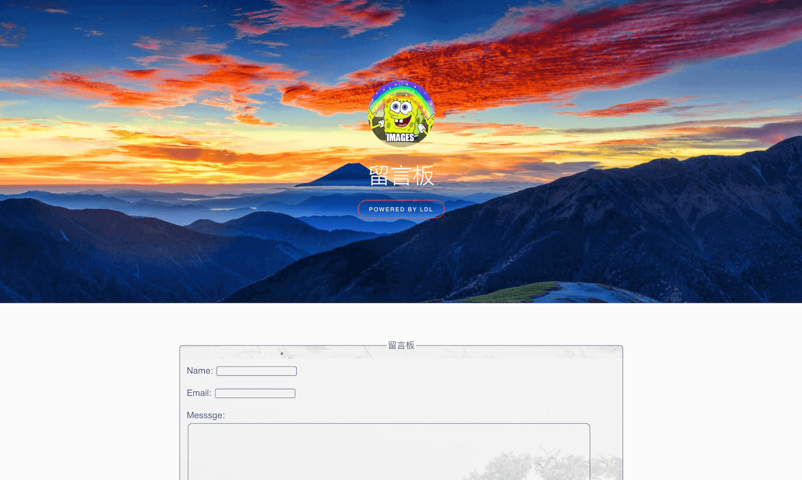
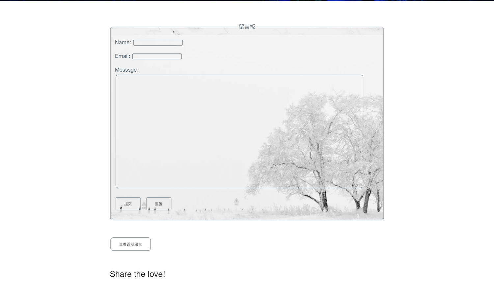
环境
XAMPP
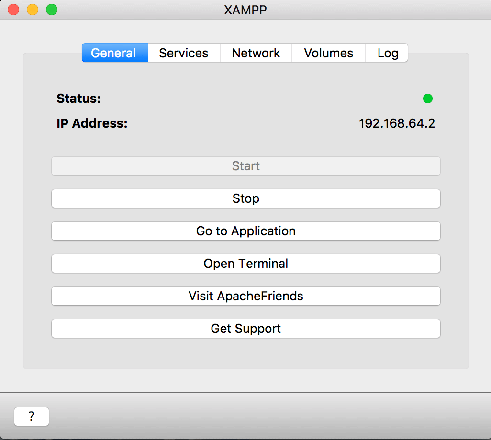
数据库phpMyAdmin
[http://localhost:8080/phpmyadmin/]
服务器：localhost
数据库：dbook
表：message
表结构：
- name
- info
reply- reply
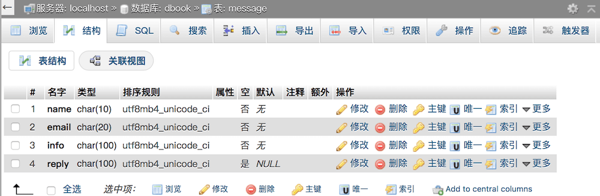
留言板的基本操作
留言
- 将留言板信息存储到数据库中
DEMO
Name：西瓜
Email：
watermelon@163.comMessage：我是西瓜！
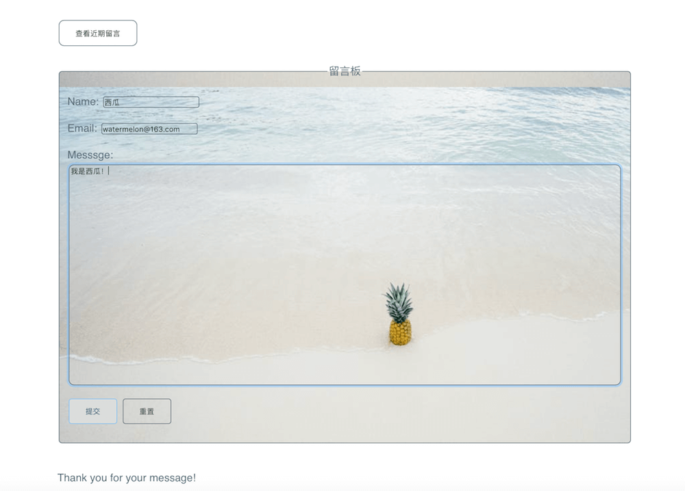
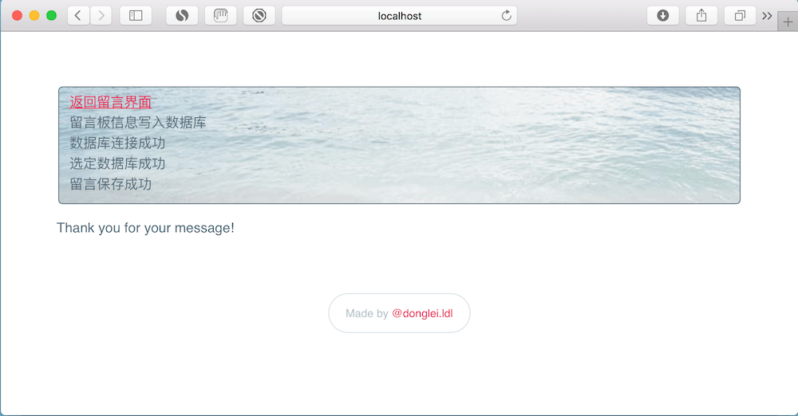
查看留言
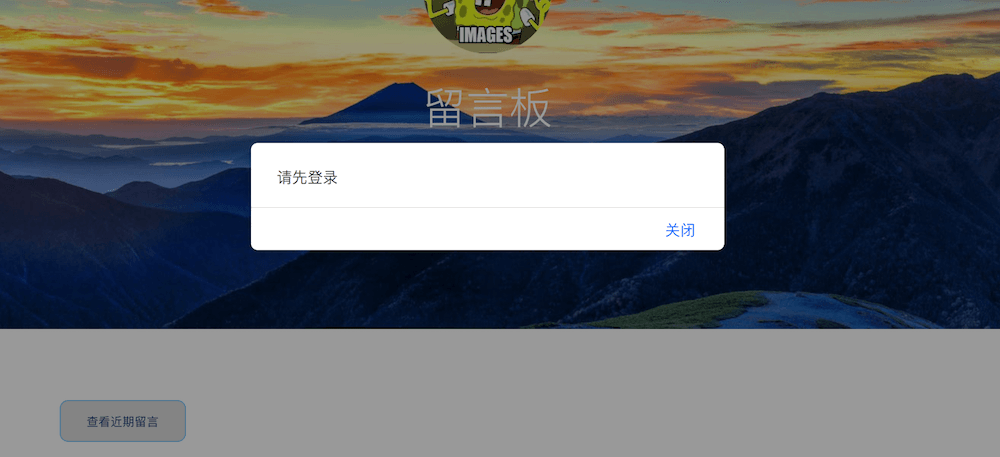
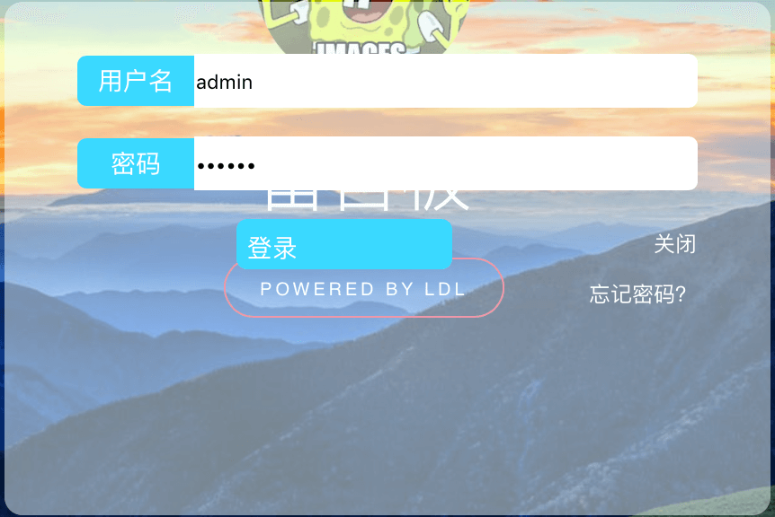
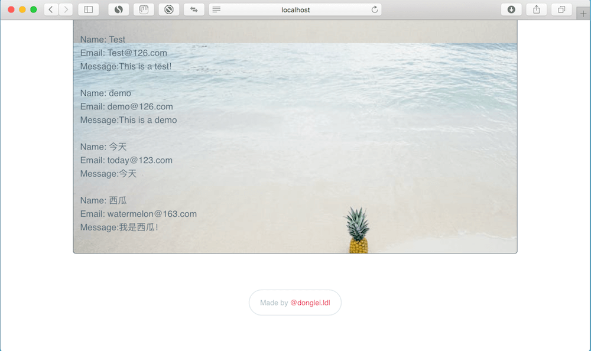
回复
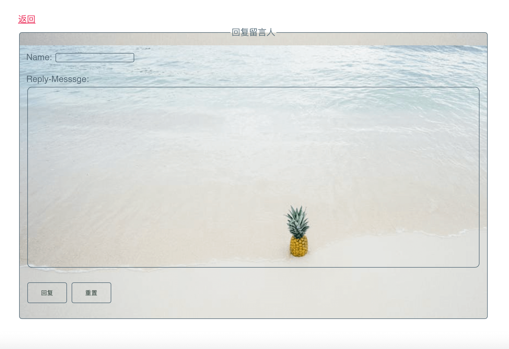
查看回复
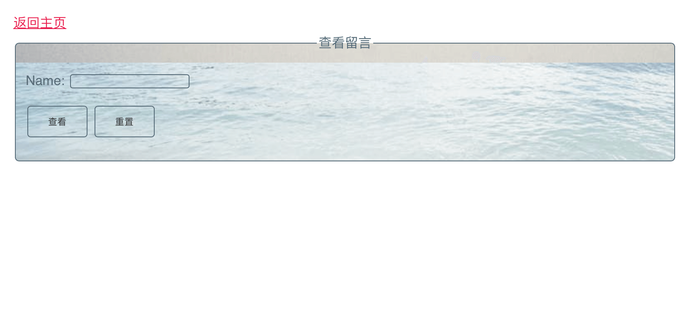
PHP 操作数据库
数据写入数据库
// 将留言信息写入数据库
<?php
$name = $_POST["Name"];
$email = $_POST["Email"];
$message = $_POST["Message"];
if ($name == "" || $email == "" || $message == "") {
echo "Name: ",$_POST["Name"], "<br>";
echo "Email: ", $_POST["Email"], "<br>";
echo "Message: ", $_POST["Message"], "<br>";
echo "留言失败！留言信息输入不完整!";
exit();
}
else
{
echo "留言板信息写入数据库</br>";
$mysql_server_name="localhost"; //数据库服务器名称
$mysql_username="root"; // 连接数据库用户名
$mysql_password=""; // 连接数据库密码
$db_name = "dbook"; //数据库名称
//连接到数据库服务器
$conn = mysqli_connect($mysql_server_name, $mysql_username,$mysql_password) or die('数据库连接失败</br>'. mysqli_error($conn));
// 选定数据库
$select = mysqli_select_db($conn, $db_name) or die('选定数据库失败</br>'. mysqli_error($conn));
// 新元素的插入
mysqli_query($conn,'set names utf8'); // 设置字符集，防止乱码
$sql = "INSERT INTO message (name, email, info) VALUES ('$name', '$email', '$message')";
if (mysqli_query($conn, $sql)){
echo "留言保存成功</br>";
} else{
echo "留言保存失败</br>";
}
}
mysqli_close($conn);
?>
从数据库中读取数据
// 将留言信息丛数据库中读出
<?php
// 从数据库中读取数据 -->
$mysql_server_name="localhost"; //数据库服务器名称
$mysql_username="root"; // 连接数据库用户名
$mysql_password=""; // 连接数据库密码
$db_name = "dbook"; //数据库名称
//连接到数据库服务器
$conn = mysqli_connect($mysql_server_name, $mysql_username,$mysql_password) or die('数据库连接失败</br>'. mysqli_error($conn));
// 选定数据库
$select = mysqli_select_db($conn, $db_name) or die('选定数据库失败</br>'. mysqli_error($conn));
mysqli_query($conn,'set names utf8'); //设置读取数据后的编码
$sql = 'SELECT name, email, info FROM message';
$result = mysqli_query($conn, $sql) or die('获取数据失败</br>'. mysqli_error($conn));
if (mysqli_num_rows($result) > 0) {
// 输出数据
while($row = mysqli_fetch_assoc($result)) {
echo "Name: ", $row["name"], "<br>", "Email: ", $row["email"],"<br>", "Message:", $row["info"] ;
echo "<br>", "<br>";
}
}
mysqli_close($conn);
?>
更新数据库信息
<?php
$name = $_POST["Name"];
$reply = $_POST["Message"];
if ($name == "" || $reply == "") {
echo "回复者姓名: ", $_POST["Name"], "<br>";
echo "回复内容: ", $_POST["Message"], "<br>";
echo "留言失败！留言信息输入不完整!";
} else {
echo "留言板信息正在写入数据库</br>";
$mysql_server_name = "localhost";
//数据库服务器名称
$mysql_username = "root";
// 连接数据库用户名
$mysql_password = "";
// 连接数据库密码
$db_name = "dbook";
//数据库名称
//连接到数据库服务器
$conn = mysqli_connect($mysql_server_name, $mysql_username, $mysql_password);
if ($conn) {
echo "数据库连接成功</br>";
} else {
echo "数据库连接失败</br>";
}
// 选定数据表
$select = mysqli_select_db($conn, $db_name);
if ($select) {
echo "选定数据库成功</br>";
} else {
echo "选定数据库失败</br>";
}
}
// 表 message: name, email, info, reply
// $name = 小王
mysqli_query($conn, 'set names utf8');
// 设置字符集，防止乱码
$sql = "UPDATE message SET reply='{$reply}' WHERE name='{$name}'";
if (mysqli_query($conn, $sql)) {
echo "<br>留言回复成功</br>";
echo "回复者姓名：", $name, '<br>';
echo "回复信息：", $reply;
} else {
echo "留言回复失败</br>";
}
mysqli_close($conn);
留言板工程源码
小作业
更新
2018-01-02
- 增加 reply
- 回复留言人
- 留言人查看回复